Introduction
"Ensign: Multi Purpose PWA Mobile App Template" is premium mobile Ui App. It is designed using Materiliaze Framework. It is modern responsive front-end framework based on Material Design. It is specially designed to give your mobile app a unique and elegant look. It is easy to customize and coded in developer friendly manner. It is designed to be a Progressive Web App (PWA).
It is fully responsive template and is adaptive with any size viewport. Solid integration of reusable UI components and latest trending plugins. This theme can be used for various types of project applications. Various niche based web app projects for like Social Media, Portfolio, News, Events, Courses, University, Mailbox, Contacts, Blogging, Ecommerce, Chat, Messaging, Payment Wallet and General App make this template a complete one stop solution for all your needs.
Installation
To install this Web App, Just unzip the zip file from your downloaded from themeforest.net . Unzip the ensign-html.zip file in this downloaded file and upload the files from this folder on the server.
You can also view the files offline in your browser on your local server.
You should see demo version of this theme from its themeforest page.
Features
Below are some major features of this web app template:
- Build using Materialize CSS framework.
- Inbuilt 12 different Apps.
- Specially build for small screens, but can be viewed on large screens as well
- Progressive Web App (PWA) Ready
- 225+ Inbuilt Demo Pages
- 15 Color Themes Included
- Light and Dark Mode
- 4 Different Header Layouts
- 3 Different Footer Layouts
- Elegant Navigation Menu
- Various Types of Portfolios
- Various Types of Blogs
- Material Font Icons
- Google Fonts
- Detailed Documentation
- User Interface and Utility Components
- Charts library for Graphical Representations
- Calendar and Event App
- Ecommerce App
- Social Media App
- Chat & Messaging App
- Online Courses App
- University and education app
- Payment and Wallet App
- Contacts, Messages, Notification Modules
- Mailbox Module
- Profile Management Module
- Fixed Bottom Menu for quick links
- Super Fast and Light Weight
- Coded to be developer friendly
- Multi Purpose and Wide Range of pages
- Famous Material Design UI
- Premium and Elegant Template
- Site Access and Error Pages Section
- Various Mobile Site Inner Pages
- Various Input Forms and Components
- Complete Mobile UI App
- Excellent Support
- Cross Browser Compatible
File Structure
Within the download you'll find the following file structure and contents
Once downloaded, unzip the compressed folder and you'll see something like this:
ensign-html └── assets │ ├── css │ ├── images │ │ └── ... │ ├── js │ │ └── ... └── moduless │ ├── app │ ├── calendar │ ├── echarts │ ├── fonts │ ├── ... │ ├── ... │ ├── ... │── .htaccess │── index.html │── pwabuilder-sw.js └── ...
Framework
Ensign: Multi Purpose PWA Mobile App Template is built using the famous CSS Framework "Materialize" (https://materializecss.com/). Materialize is a modern responsive front-end framework based on Material Design.
Created and designed by Google, Material Design is a design language that combines the classic principles of successful design along with innovation and technology. Google's goal is to develop a system of design that allows for a unified user experience across all their products on any platform.
Grid
12 Columns Grid
Our standard grid has 12 columns. No matter the size of the browser, each of these columns will always have an equal width..
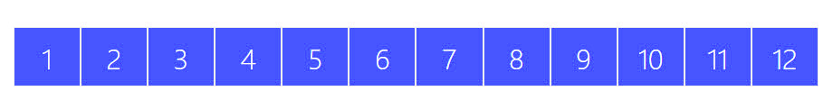
<div class="row">
<div class="col s1">1</div>
<div class="col s1">2</div>
<div class="col s1">3</div>
<div class="col s1">4</div>
<div class="col s1">5</div>
<div class="col s1">6</div>
<div class="col s1">7</div>
<div class="col s1">8</div>
<div class="col s1">9</div>
<div class="col s1">10</div>
<div class="col s1">11</div>
<div class="col s1">12</div>
</div>
Columns live inside Rows
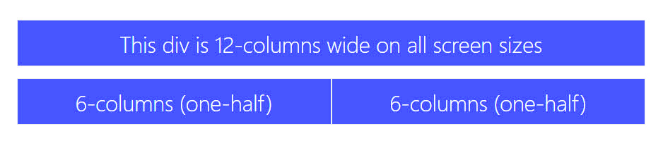
<div class="row">
<div class="col s12">This div is 12-columns wide on all screen sizes</div>
<div class="col s6">6-columns (one-half)</div>
<div class="col s6">6-columns (one-half)</div>
</div>
Offsets
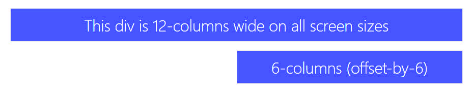To offset, simply add offset-s2 to the class where s signifies the screen class-prefix (s = small, m = medium, l = large) and the number after is the number of columns you want to offset by.
<div class="row">
<div class="col s12"><span class="flow-text">This div is 12-columns wide on all screen sizes</span></div>
<div class="col s6 offset-s6"><span class="flow-text">6-columns (offset-by-6)</span></div>
</div>
Push and Pull
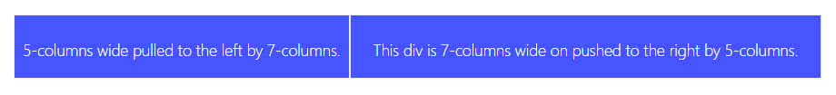You can easily change the order of your columns with push and pull. Simply add push-s2 or pull-s2 to the class where s signifies the screen class-prefix (s = small, m = medium, l = large) and the number after is the number of columns you want to push or pull by.
<div class="row">
<div class="col s7 push-s5"><span class="flow-text">This div is 7-columns wide on pushed to the right by 5-columns.</span></div>
<div class="col s5 pull-s7"><span class="flow-text">5-columns wide pulled to the left by 7-columns.</span></div>
</div>
Progressive Web App (PWA)
Progressive Web Apps are user experiences that have the reach of the web, and are:
Reliable - Load instantly and never show the downasaur, even in uncertain network conditions.
Fast - Respond quickly to user interactions with silky smooth animations and no janky scrolling.
Engaging - Feel like a natural app on the device, with an immersive user experience.
This new level of quality allows Progressive Web Apps to earn a place on the user's home screen.
You can read more about PWA here: https://developers.google.com/web/progressive-web-apps
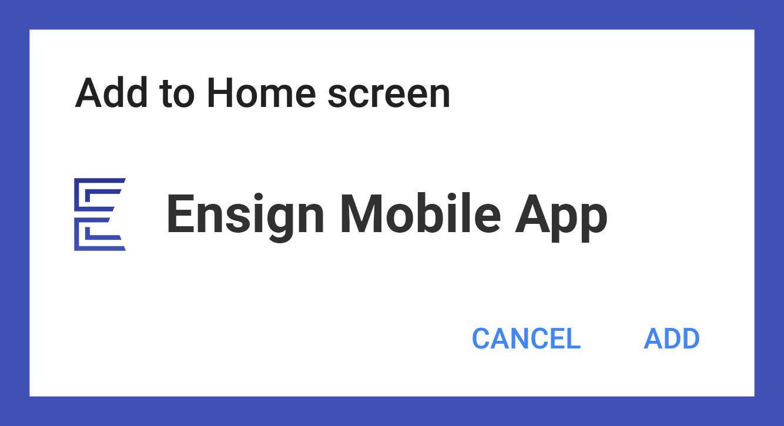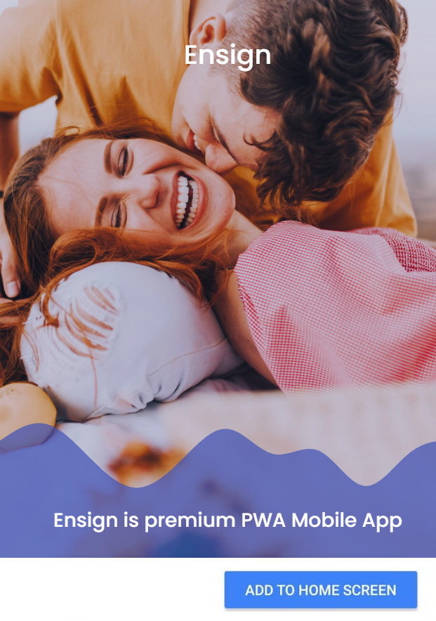
A Progressive Web App (PWA) is a web app that uses modern web capabilities to deliver an app-like experience to users. These apps meet certain requirements (see below), are deployed to servers, accessible through URLs, and indexed by search engines.
This can work in conjunction with Capacitor to provide a multiple deploy targets for all your users. You can deploy your app as a PWA as well as Native app and take advantage of both channels.
Ionic allows you to ship your app to not only the app store, but also deploy to the mobile web as a PWA.
Service Worker for PWA is in pwabuilder-sw.js file.
Inbuilt Themes
"Ensign: Multi Purpose PWA Mobile App Template" comes with multiple prebuilt themes. You can use any as per your liking.
You can give your users an option to pick any theme of their choice as well.
You can show all themes in side menu just like included in the download package.
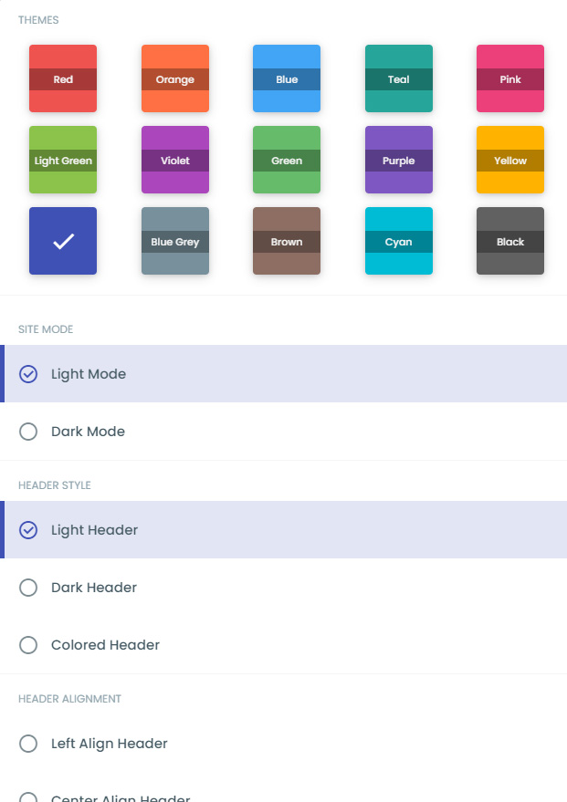In assets/js/variables.js there is a variable defaultval.
This variable has all the default settings of your app such as theme, menu, footer menu, site mode etc.
Default values can be applied are as follows:
Theme: red, orange, blue, teal, pink, light-green, purple, green, deep-purple, amber, indigo, blue-grey, brown, cyan, gray.
Header Style: light, dark, colored
Header Alignment: left, right, center, app
Menu Style: light, dark, colored
Menu Icons: on, off
Footer Style: light, dark, colored
Footer Type: minimal, left, center
Fixed footer menu: show, hide
Fixed footer menu style: light, dark, colored
You need to update the values in this variable. When user loads the app, for first time, these variable values are stored in localStorage of the browser.
After setting your own custom values in this variable, you need to reset the localstorage to default.
To reset the localStorage follow these steps:
1. To reset open modules/app/settings.js file and in the end uncomment resetSettings(); line in the end part of file.
2. Then reload the app in browser. This way new variable values will be applied in your app.
3. You can comment the resetSettings(); line again and save file.
Open "assets/css" folder and rename the style-red.css file to style.css to load the red CSS theme on your site. You can similiarly replace red with any color theme as per your need.
Site Mode
"Ensign: Multi Purpose PWA Mobile App Template" can be viewed as light and dark mode.
You can keep both the versions in your project or show only as light or dark.
There is a icon in header to switch between light and dark mode.
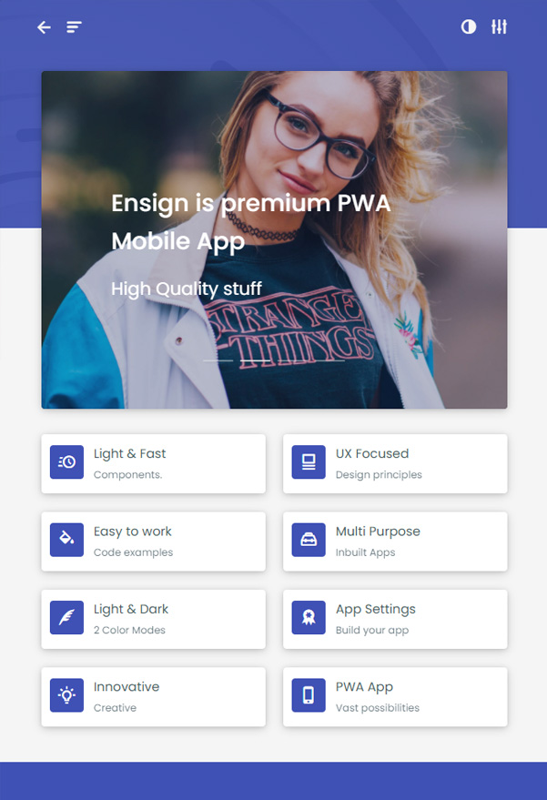 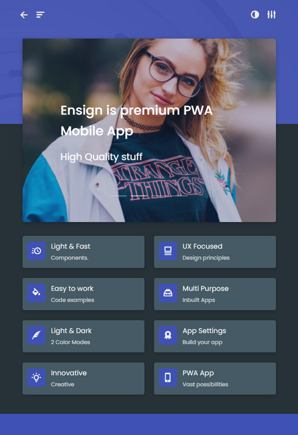Open <body> tag has attribute as data-site_mode="dark" for dark mode. Light is default mode. You can also mention data-site_mode="light" for light mode in your app. The switch icon in header just toggles this attribute value to light and dark when clicked.
Images & Favicon
All the images are placed under assets/images folder.
Site favicon images are placed under assets/images/icons folder.
Along with favicon apple and android icon images are also configured in this app. These images are also located under assets/images/icons folder.
This images are included in assets/images/icons/manifest.json file.
All the images are called in <head></head> tag of each webpage.
CSS and Javascript
style.css is the main CSS file located in assets/css/ folder of the package. Whole CSS file is well indexed with topic and its related code.
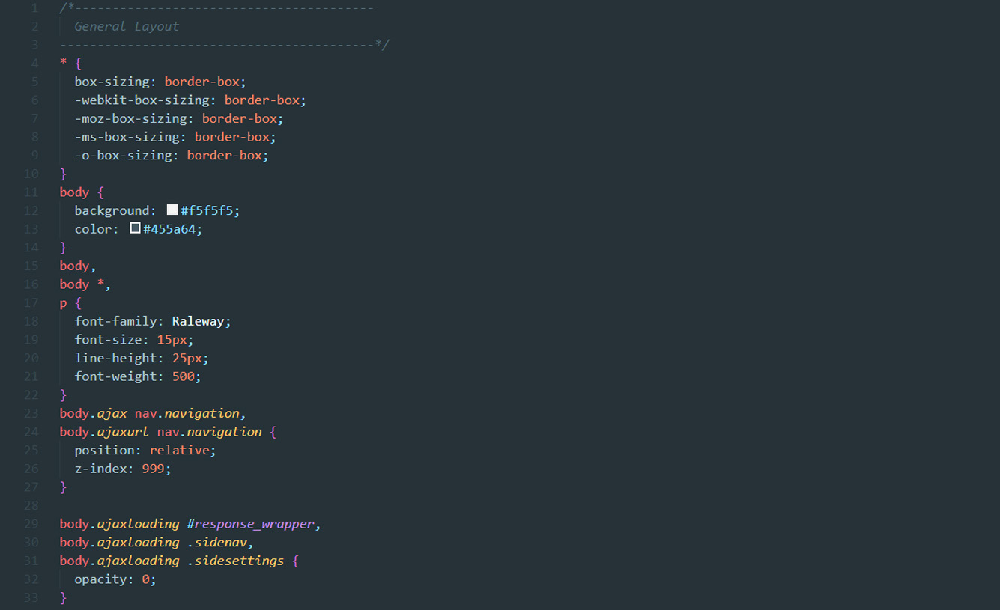
init.js is the main JS file located in assets/js/ folder of the package. Whole JS file is well indexed with topic and its related code.

settings.js is the file used for settings menu on right.
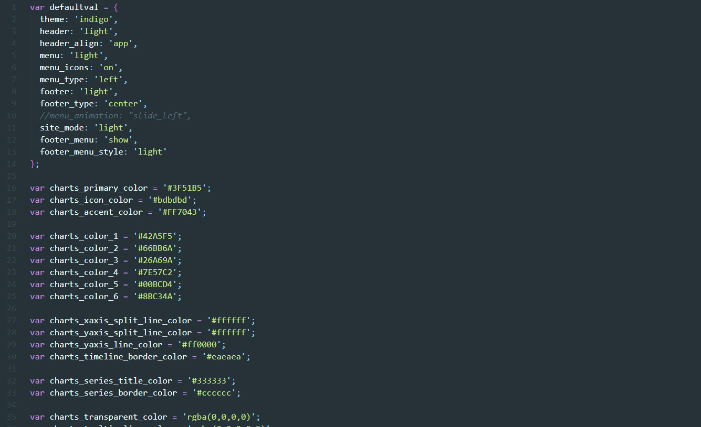
Icons
Fonts Icons used under this project are located at assets/fonts/ folder. "Material Design Icons" font icons are used in this project.
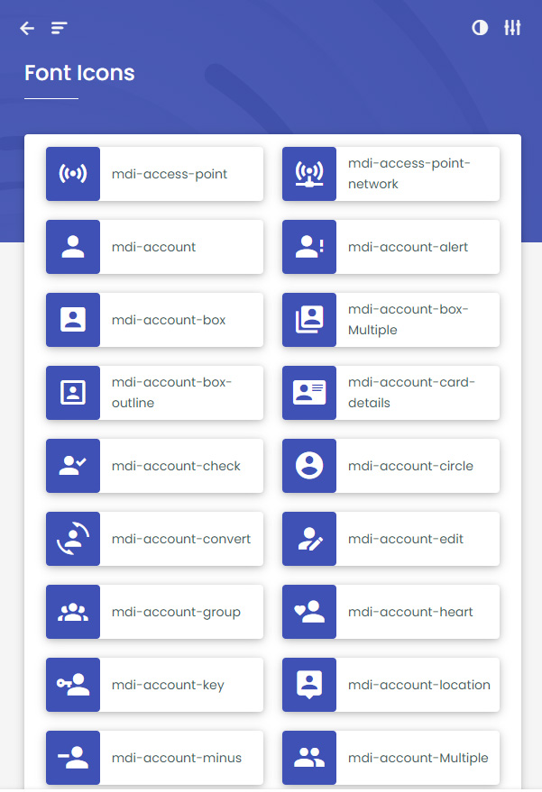
Along with these icons fontAwesome icon sets are also integrated in this app.
Google Fonts
Google Fonts "Raleway" are used in this app. Following font code @import url(https://fonts.googleapis.com/css?family=Raleway:100,300,400,500,700); is used in assets/css/style.css file.
Header
Header top bar has number of variations in this template. There are basically 4 different header layouts in this template. They are:
1. Centered Header (default)
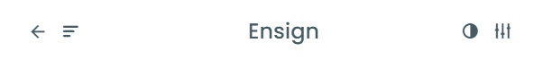
2. Left Aligned Header
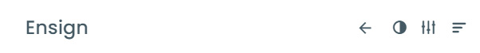
3. Right Aligned Header
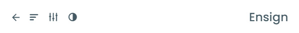
4. App Style Header
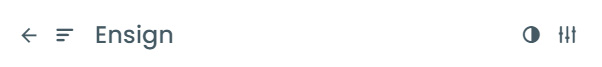
All these headers can be applied from settings side bar of this template.
<body> tag has attribute data-header_align="center" for center aligned header layout.
<body> tag has attribute data-header_align="left" for Left aligned header layout.
<body> tag has attribute data-header_align="right" for Right aligned header layout.
<body> tag has attribute data-header_align="app" for App Style header layout.
<body> tag has attribute data-header="light" for Light Colored header style.
<body> tag has attribute data-header="dark" for Dark Colored header style.
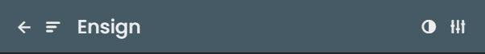
<body> tag has attribute data-header="colored" for Colored header style. Color is based on your theme used.
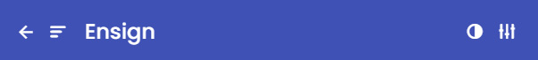
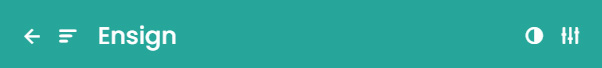
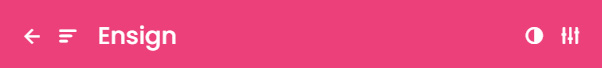
Following is the code for Header Area:
<nav class="fixedtop topbar navigation" role="navigation">
<div class="nav-wrapper container">
<a id="logo-container" href="index.html" class=" brand-logo "><i class="mdi mdi-ring"></i>Ensign</a>
<!-- <ul class="right hide-on-med-and-down">
<li><a href="#">Navbar Link</a></li>
</ul> -->
<a href="#" data-target="" class="waves-effect waves-circle navicon back-button htmlmode show-on-large "><i class="mdi mdi-chevron-left" data-page=""></i></a>
<a href="#" data-target="slide-nav" class="waves-effect waves-circle navicon sidenav-trigger show-on-large"><i class="mdi mdi-menu"></i></a>
<a href="#" data-target="slide-settings" class="waves-effect waves-circle navicon right sidenav-trigger show-on-large pulse"><i class="mdi mdi-tune"></i></a>
<a href="#" data-target="" class="waves-effect waves-circle navicon right nav-site-mode show-on-large"><i class="mdi mdi-invert-colors mdi-transition1"></i></a>
</div>
</nav>
Charts - Graphical Representations
Ensign Mobile App template is integrated with various types of graphical representations. Charts like line, area, bar, stacked bar, scatter, donut, pie, funnel etc. are configured in this template.
Echarts library is integrated for graphical representations in this template. You can extend or configure it as per your need.
assets/js/echarts-all.js and assets/js/echarts.min.js are integrated.
assets/js/chart-echarts.js has all the code implemented for each graph type. You can visit the Charts section of this template for further reference.
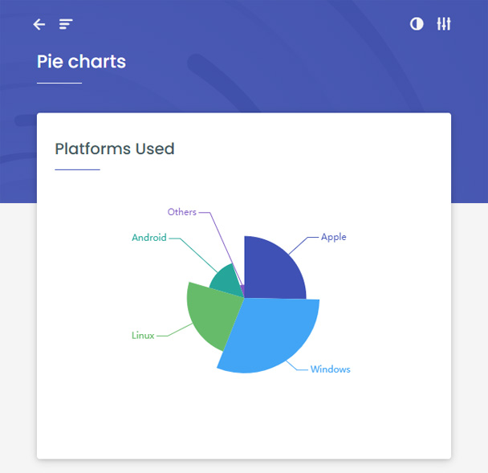
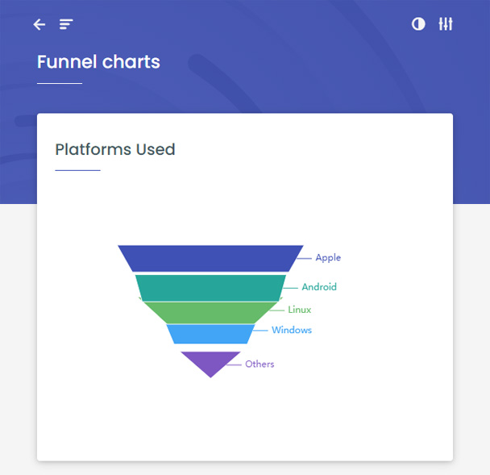
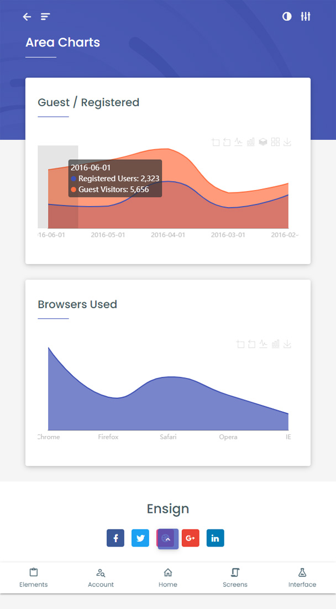
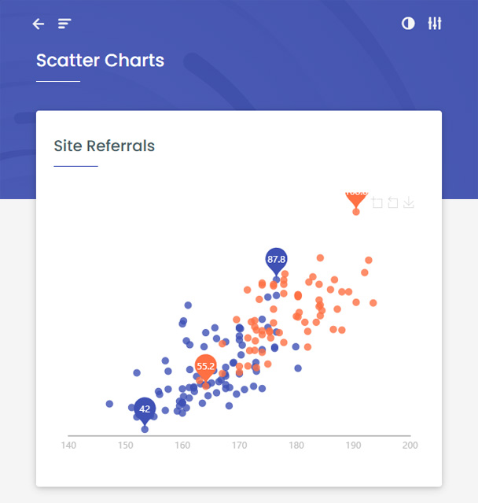
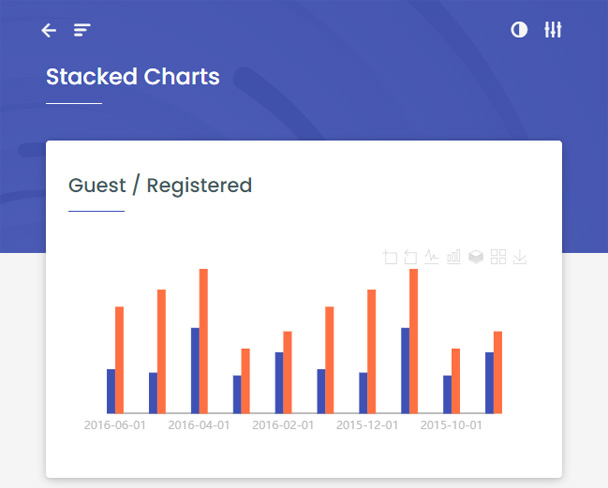
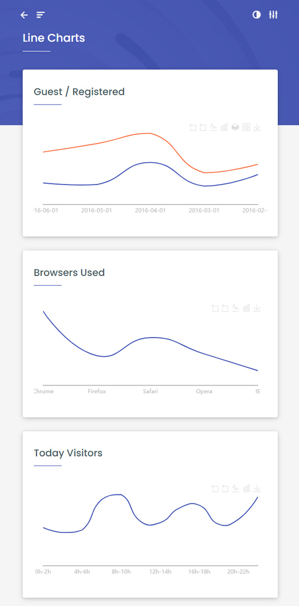
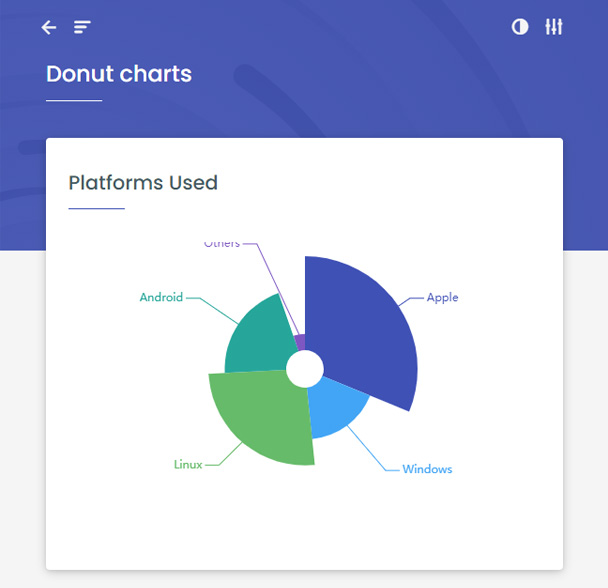
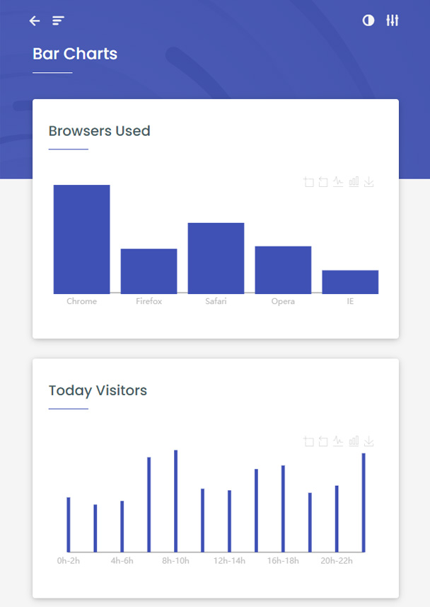
Plugins
Following plugins are integrated under package.json file
- Materialize CSS
- ECharts
- Font Awesome Icons
- Material Design Icons
- jQuery
- Fancybox
- Perfect Scrollbar
- Preloader
Thank you
Thank you for purchasing. If you have any questions that are beyond the scope of this documentation, please feel free to contact me at email: themepassion@jaybabani.com.